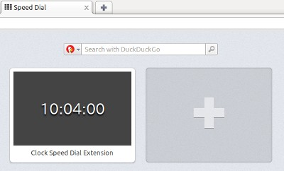

Opera Speed Dial エクステンション（拡張機能）の作成
From Opera 15 onward, Opera 11 & 12’s extension format is no longer supported, and instead, we’ve switched to Chromium’s extension model. Check out our new documentation for developing extensions for Opera 15 and higher and start building your own extensions.
はじめに
Opera が Speed Dial を導入し、世界に向けて発表したのは 2007 年に遡ります。発表当時、Speed Dial のコンセプトは極めて好評を博し、今では他のブラウザでも似たような機能が見かけられるようになりました。しかし、そのような誇るべき機能を発展させることなく、また新しいスキルを開発をせずに放っておくという手はありません。Opera 11.10 版においては、Speed Dial の視覚的な表示方法とユーザーエクスピリエンスを改善し、Speed Dial のパネルに描画される際のサイトの外観を作成者自身がコントロールできる方法を提供しました。Opera 11.50 では、さらにもう一歩踏み込んだ Speed Dial エクステンション を提供しています。
多数ある Opera エクステンション の一つを使用してブラウザを拡張できるのと同様に、カスタマイズや拡張を行って、Speed Dial をさらに役立つものにすることができます。Speed Dial は、Web ページやアイコンのスクリーンショットに限定されることなく、実際の拡張機能コンテンツを描画することができるようになりました。ここではその方法についてご説明したいと思います。
メモ：サンプルが実際に実行されるのを確認するには、Opera 11.50 版以上、および Speed Dial の拡張機能サンプル： Speed Dial クロックのダウンロード が必要となります。
基本
Speed Dial エクステンションは、通常の Opera エクステンションとの拡張性を維持するために同じフォーマットと構造を使用していますが、いくつか追加するものがあります。以下のような小さな追加を config.xml に行うと、既存の Opera エクステンションを Speed Dial エクステンションに変更することができます。
- 拡張機能を Speed Dial の拡張機能に変えることができる、
opera:speeddialのname属性をもつ<feature>要素 minimizedの値が指定された<widget>タグに含まれるviewmodes属性：Speed Dial のパネルでバックグラウンドページを表示します。
拡張機能は、現時点では Speed Dial の機能とブラウザツールバーの両方を使用することができませんのでご留意下さい。これは、現在の実装では、ツールバーボタンがある拡張機能は Speed Dial エクステンションとして機能することができないということを意味します。
config.xmlで Speed Dial エクステンションを指定する
この方法論を実際に実行して、サンプルの拡張機能を見てみましょう。コンテキストでコードスニペットを見るには、Speed Dial クロック拡張機能のダウンロード を行い、パッケージ内のソースファイルをご覧下さい。図 1 では、完了時の拡張機能の外観を表示しています。

図 1：Opera ブラウザの Speed Dial にインストールされたクロック拡張機能
通常の Speed Dial パネルでは Web ページのスクリーンショットが表示されますが、Speed Dial エクステンションでは、該当する拡張機能のスタート（あるいはバックグラウンド）ページが表示されます。デフォルトでは index.html です。これを有効にするには、最初に viewmodes 属性を config.xml の <widget> タグに追加し、minimized を指定します。
<widget xmlns="http://www.w3.org/ns/widgets" id="http://example.com/SimpleClockSD" viewmodes="minimized">上記は、ブラウザが拡張機能のバックグラウンドページを最小で表示することを意味します。100% のズームレベルにおける各 Speed Dial ウィンドウのサイズは、横 256 ピクセル × 縦 160 ピクセルです。さらに、Opera Speed Dial に対して required 属性を持つ feature 要素と、param 要素を追加することも必要です。
<feature name="opera:speeddial" required="false">
<param name="url" value="http://en.wikipedia.org/wiki/Time"/>
</feature>feature 要素の required 属性は、該当する拡張機能が実行するのに Speed Dial が必要になるかどうかを表します。例えば、他のブラウザやユーザーエージェントなどで、Opera エクステンションと互換性があるけれども Speed Dial を持たない場合などが考えられます。このような場合において拡張機能を機能させるには、false を適用して下さい。Speed Dial が無い場合には機能させないようにするには、true を選択して下さい。
param 要素は必須のため、Speed Dial アイコンがクリックされた際に開くページを指定して下さい。
以下がこの拡張機能の完全な config.xml ファイルです。
<?xml version="1.0" encoding="utf-8"?>
<widget xmlns="http://www.w3.org/ns/widgets" id="http://example.com/SimpleClockSD" defaultlocale="en" viewmodes="minimized">
<name short="Simple Clock">Clock Speed Dial Extension</name>
<description>This is an example Speed Dial extension showing a simple clock.</description>
<author href="http://people.opera.com/danield/">Daniel Davis</author>
<icon src="images/icon_64.png"/> <!-- Icon source: http://www.openclipart.org/detail/17552 -->
<feature name="opera:speeddial" required="false">
<param name="url" value="http://en.wikipedia.org/wiki/Time"/>
</feature>>
</widget>拡張機能にコンテンツを追加する
次のステップでは、Speed Dial ウィンドウで実際に表示するものを作成します。これは拡張機能のバックグラウンドページのため、index.html という名前のファイルを、config.xml と同じディレクトリ内に作成する必要があります。このサンプルでは、現在時間を秒単位まで表示できるデジタルクロックを JavaScript を使用して作成してみましょう。まず最初に、基本の index.html を空の output 要素を使用して作成します。
<!DOCTYPE html>
<html lang="en">
<head>
<meta charset="utf-8">
<link rel="stylesheet" href="style.css">
<title>Clock Speed Dial Extension</title>
</head>
<body>
<output></output>
<script src="scripts/background.js"></script>
</body>
</html>次に、リンクした background.js ファイルを含む scripts ディレクトリを作成する必要があります。その際、JS ファイルは以下のようになります。
window.addEventListener('load', function() {
// Simple function to prefix a zero if the value passed is less than 10
function formatTime(time) {
return (time < 10) ?'0' + time : time;
}
var output = document.querySelector('output');
var date, hours, mins, secs;
// Get and display the current time every 500 milliseconds
var timer = window.setInterval(function() {
date = new Date();
hours = date.getHours();
mins = date.getMinutes();
secs = date.getSeconds();
output.innerHTML = formatTime(hours) + ':' + formatTime(mins) + ':' + formatTime(secs);
}, 500); // Twice a second to allow for slight delays in JavaScript execution
}, false);付随するスタイルシート (style.css) はシンプルですが、これにはある巧妙なトリックが含まれています。
* {
margin: 0;
padding: 0;
}
html {
height: 100%;
}
/* Use display:table and display:table-cell
so that we can use vertical-align:middle */
body {
background: #444;
color: #fff;
display: table;
height: 100%;
width: 100%;
}
output {
display: table-cell;
font-family: monospace;
font-size: 10em;
text-align: center;
text-shadow: 0 0.1em 0.1em #000;
vertical-align: middle;
}
/* Styles here are only applied in a "minimized" state */
@media screen and (view-mode: minimized) {
output {
font-size: 1.8em;
}
}ご覧の通り、上記ファイルの下部分に view-mode: minimized の状態を確認する CSS3 メディアクエリがあります。これは、view-mode Media Feature specification に沿ったものです。言い換えると、このセクションにおけるスタイルは、Speed Dial パネルのようにページを最小表示する場合にのみ適用されるということです。これは、複数のデザインを保持することなく、ある特定の状況においてスタイルを上書きできる便利な方法です。
拡張機能を仕上げる
作成したものを拡張機能としてパッケージするには、通常通り、ディレクトリ内の全てのファイル（ディレクトリ自体は除く）を ZIP して、.oex 拡張子を使用して名前を付けます。今まで行ったことがない場合は、clock_SD_extension.oex をダウンロードして試してみて下さい。
SpeedDialContext の API
拡張機能は一度インストールされると、SpeedDialContext の API を使用して Speed Dial のパネルを動的にコントロールします。この API は、書き込みが可能な title と url の 2 つのプロパティを使用した非常にシンプルなものです。以下のように、これらのプロパティには opera.contexts.speeddial オブジェクトを通してバックグラウンドの JavaScript からアクセスされます。
if (opera.contexts.speeddial) {
var sd = opera.contexts.speeddial;
sd.title = "My title";
sd.url = "mypage.html";
}この機能を利用してクロック拡張機能をさらに拡張することができます。例えば、時間に応じてフレンドリーなメッセージを表示することが可能です。以下のように background.js JavaScript ファイルを編集するだけで行えます。
window.addEventListener('load', function() {
// Simple function to prefix a zero if the value passed is less than 10
function formatTime(time) {
return (time < 10) ?'0' + time : time;
}
var output = document.querySelector('output');
var date, hours, mins, secs, tmp_hours, timeofday;
var messages = {
"morning": "Good morning!",
"afternoon": "Good afternoon!",
"evening": "Good evening!",
"night": "Shouldn't you be in bed?"
};
// Get and display the current time every 500 milliseconds
var timer = window.setInterval(function() {
date = new Date();
hours = date.getHours();
mins = date.getMinutes();
secs = date.getSeconds();
output.innerHTML = formatTime(hours) + ':' + formatTime(mins) + ':' + formatTime(secs);
// Make the Speed Dial title display time-related message
if (hours !== tmp_hours) {
if (hours > 15) {
timeofday = 'evening';
} else if (hours > 11) {
timeofday = 'afternoon';
} else if (hours > 3) {
timeofday = 'morning';
} else {
timeofday = 'night';
}
if (opera.contexts.speeddial) {
opera.contexts.speeddial.title = messages[timeofday];
}
tmp_hours = hours;
}
}, 500); // Twice a second to allow for slight delays in JavaScript execution
}, false);これは、最初に挙げたサンプルと同じですが、以下のものが追加されています。
- 時間に応じて表示されるメッセージを含む
messagesオブジェクト。 - 時間が変わった時にコードを実行する繰り返し確認。
- Speed Dial のタイトル内に
messagesオブジェクトから関連するメッセージを表示する行。
この拡張機能はこちらの friendly_clock_SD_extension.oex からダウンロードして下さい。インストールされると、以下のように表示されます。

図 2：Opera browser の Speed Dial にインストールされた、フレンドリーなメッセージを表示するクロック拡張機能
最後に
ご覧の通り、拡張機能開発者にとって、作成する拡張機能をさらに便利で、手軽に使え、楽しめるものにする機会が提供されるようになりました。ここでご紹介した例は基本的なものではありますが、Speed Dial 拡張機能がスマートなアイデアと Web 開発のスキルと結びついて発揮され得る可能性を示しています。Speed Dial 拡張機能が Web サイトへの単なるリンク以上のものになることを望みつつ、また Opera エクステンションのレポジトリ で、この API を利用したクリエイティブなアイデアが見られることを楽しみにしています。
関連する文書
Opera Extensions API: Speed Dial guide
p.oexThis article is licensed under a Creative Commons Attribution-Noncommercial-Share Alike 3.0 Unported license.
Comments
The forum archive of this article is still available on My Opera.
No new comments accepted.